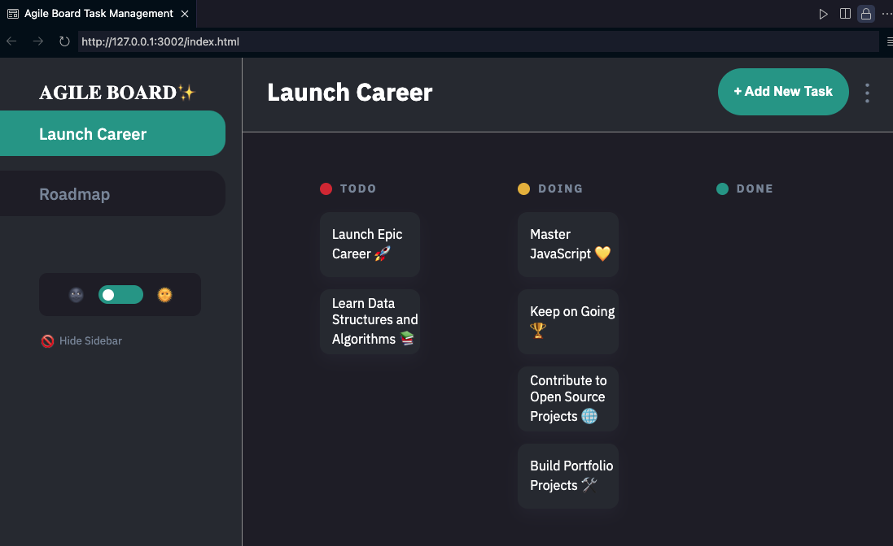

Hello! I’m Pearl, a junior front-end developer with hands-on experience in JavaScript, HTML, and CSS. I’ve built dynamic applications like task management tools and virtual pet adoption platforms. With a background in training and virtual assistance, I bring strong problem-solving skills and a passion for writing clean code. Currently, I’m completing a 6-month Software Development Program at CodeSpace, where I’ve developed a solid foundation in web development. I’m eager to transition into a full-time role in JavaScript development and contribute to innovative digital solutions.
Software Development Program
(2024)
Bachelor of Arts: Commmunication
(2017)
Kanban Task Management App
Overview: This app organizes tasks visually on a board, allowing users to create, move, and prioritize tasks across different columns (like "To Do," "In Progress," and "Done"). It’s designed to streamline project management, providing users with a clear overview of task progress.
Skills Gained: I developed skills in JavaScript for dynamic functionality, handling event-driven programming to manage task updates, and DOM manipulation to support a responsive, interactive UI. I also practiced using CSS for layout design and state management to handle task data effectively across different board columns.
Virtual Pet Adoption Website
Overview: This website simulates the experience of adopting a pet, allowing users to explore and adopt various animals with details such as pet names, types, and needs. It provides a friendly, engaging interface for potential adopters.
Skills Gained: This project helped me develop skills in form handling and data validation to ensure user input accuracy, as well as HTML and CSS to build an appealing, accessible layout. I also worked with JavaScript to manage the adoption process, enhancing my experience with user interactions and conditional rendering to customize the user journey.

Book Connect Application
Overview: The Book Connect app offers a comprehensive list of books, allowing users to preview book details (such as author, genre, and image) and filter based on their preferences. It helps users discover and explore a wide variety of books.
Skills Gained: This project honed my data management skills by organizing and filtering a large dataset, and I improved my ability to dynamically render content in the UI. JavaScript arrays and objects became critical tools for handling book data, while search and filtering functions enabled personalized user experiences.

Cache Bank Landing Page
Overview: The landing page serves as the initial point of contact for the Cache Bank, highlighting services, benefits, and features in an attractive and professional layout to encourage user engagement.
Skills Gained: Creating this landing page helped me refine my layout and styling skills using CSS, specifically Tailwind CSS, including techniques to achieve a polished, responsive design. Additionally, I used basic JavaScript animations to enhance the visual appeal and user experience of the site.